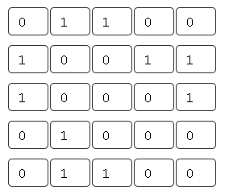

Матрица смежности
Матрица смежности, как и матрица инцидентности, позволяет установить множество вершин, соседних с заданной (то есть рассматриваемой в конкретной задаче), не прибегая к полному просмотру всей матрицы. Матрицы смежности обычно представляются двумерным массивом размера n x n, где n - число вершин графа.
Матрица смежности S - это квадратная матрица, в которой и число строк, и число столбцов равно n - числу вершин графа. В ячейки матрицы смежности записываются некоторые числа в зависимости от того, соединены соответствующие вершины рёбрами или нет, и от типа графа.
Матрица смежности для неориентированного графа
Элемент матрицы смежности sij неориентированного графа определяется следующим образом:
- равен единице, если вершины vi и vj смежны;
- равен нулю, если вершины vi и vj не смежны.
Если для элемента матрицы vij имеет место i = j, то есть элемент находится на диагонали, то этот элемент равен единице, если этот элемент имеет петлю, и нулю, если элемент не имеет петли.
Пример. Составить матрицу смежности для графа, представленного на рисунке ниже.

Ответ
Таким образом, матрица смежности неориентированного графа симметрична относительно главной диагонали.